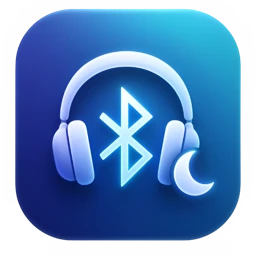
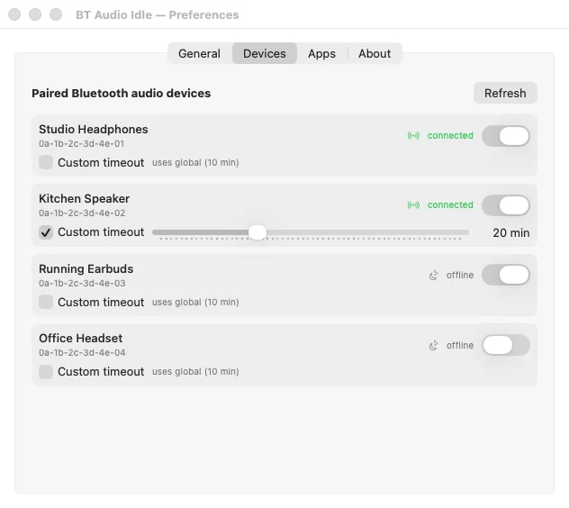

Bateria idzie w ciszę
Połączone słuchawki zużywają energię, nawet gdy nic nie odtwarzają. Wieczorem okazuje się, że trzeba je ładować.

BT Audio Idle siedzi w pasku menu macOS i pilnuje ciszy. Jeśli przez 10 minut nic nie gra, rozłącza słuchawki i głośniki Bluetooth. Nie tracą baterii, kiedy leżą na biurku, i są wolne dla telefonu.

Problem
Muzyka ucichła, słuchawki leżą na biurku, a Ty jesteś w kuchni. macOS nie rozłączy ich sam: trzeba wyłączyć Bluetooth albo kliknąć ręcznie w ustawieniach.
Połączone słuchawki zużywają energię, nawet gdy nic nie odtwarzają. Wieczorem okazuje się, że trzeba je ładować.
Dopóki Mac trzyma połączenie, słuchawki często nie połączą się z telefonem ani tabletem bez ręcznego przełączania.
Zapomniany głośnik w innym pokoju wciąż jest domyślnym wyjściem. Następny dźwięk zagra właśnie tam.
Funkcje
Wszystko ustawisz w jednym oknie z czterema kartami: General, Devices, Apps i About. Aplikacja ma interfejs po angielsku, dlatego nazwy opcji na zrzutach są po angielsku.
Aplikacja sprawdza w CoreAudio, czy domyślne wyjście dźwięku faktycznie coś odtwarza. Gdy zapada cisza, rusza odliczanie. Przed samym rozłączeniem dostajesz powiadomienie z przyciskiem Cancel.
Lista pokazuje wszystkie sparowane urządzenia audio Bluetooth i to, czy są teraz połączone. Każde możesz wyłączyć z monitorowania albo dać mu własny czas bezczynności zamiast globalnego.
Podczas rozmowy w Zoomie czy Teamsach bywają długie chwile ciszy, a słuchawki mają zostać połączone. Dodaj takie aplikacje do listy: dopóki któraś z nich działa, odliczanie się nie zaczyna.
Aplikacja reaguje na uśpienie Maca i może uruchamiać się razem z systemem. Wszystko, co robi, zapisuje w pliku dziennika.
SMAppService.~/Library/Logs/BTAudioIdleDisconnect.log, rotowany po 1 MB.Jak to działa
Pobierz plik DMG i przeciągnij aplikację do folderu Aplikacje. Przy pierwszym uruchomieniu kliknij ją prawym przyciskiem i wybierz Otwórz.
Bez nich aplikacja nadal rozłącza urządzenia, ale nie zobaczysz ostrzeżenia z przyciskiem Cancel.
Otwórz Preferences… z ikony w pasku menu i ustaw czas bezczynności, urządzenia oraz wyjątki.
Gdy muzyka gra, nic się nie dzieje. Gdy przestaje, obok ikony pojawia się odliczanie, a po nim ostrzeżenie i rozłączenie.
| Coś gra | Licznik jest wyłączony. |
|---|---|
| Zapada cisza | Rusza odliczanie, a w pasku menu widać pozostały czas, np. 9:42. |
| Czas minął | Pojawia się powiadomienie, a obok ikony odliczanie w sekundach. |
| Kliknięto Cancel | Rozłączenie przesuwa się o czas ustawiony w Snooze on cancel. |
| Minął czas ostrzeżenia | Monitorowane urządzenia zostają rozłączone. |
| Mac zasypia / budzi się | Odliczanie staje (albo urządzenia zostają rozłączone, jeśli tak ustawisz), a po wybudzeniu rusza od nowa. |
Galeria
Kliknij zrzut, żeby go powiększyć. Zrzuty pochodzą z działającej aplikacji, a nazwy urządzeń i adresy są przykładowe. Ich wersja (jasna lub ciemna) zależy od motywu Twojego systemu.
Instalacja
Wymagania: macOS 13 lub nowszy i sparowane urządzenie audio Bluetooth.
Potrzebujesz Xcode 15+ albo Swift 5.9+. Skrypt buduje wersję release, składa pakiet .app i podpisuje go ad-hoc.
git clone https://github.com/jash90/bt-audio-idle-disconnect.git
cd bt-audio-idle-disconnect
./scripts/build-app.sh
mv "build/BT Audio Idle.app" /Applications/
open "/Applications/BT Audio Idle.app"Ustawienia: ~/Library/Application Support/BTAudioIdleDisconnect/settings.json. Dziennik: ~/Library/Logs/BTAudioIdleDisconnect.log. Obraz DMG tworzy ./scripts/build-dmg.sh.
IOBluetooth, którego sandbox App Store nie dopuszcza. Aplikacja jest dystrybuowana bezpośrednio.